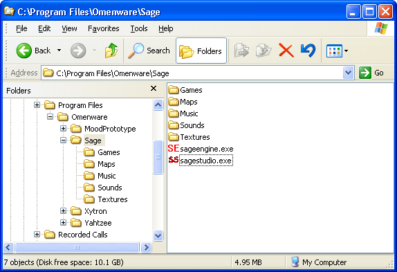
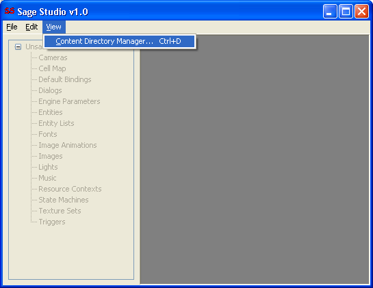
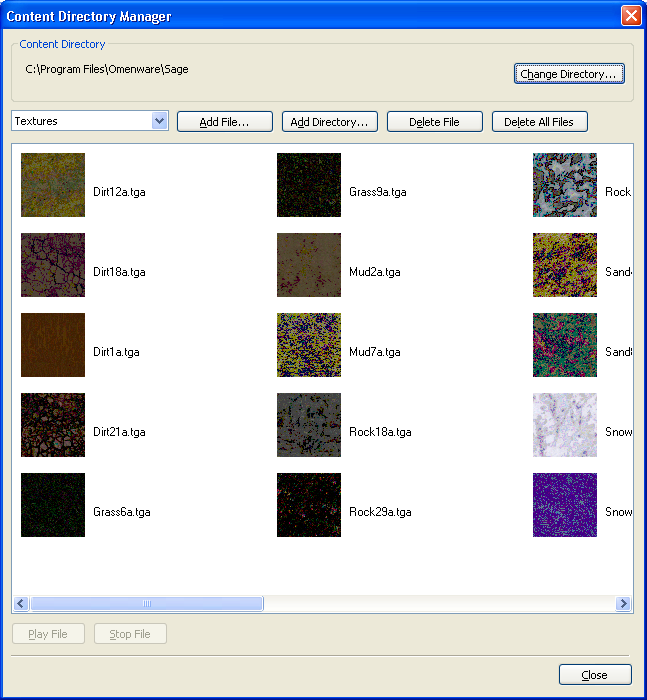

You must designate a directory as your "Content Directory", typically you'll use whichever directory you installed Sage to, which defaults to
C:\Program Files\Omenware\SageA Content Directory is the directory that acts as the "root" directory for your game. Every file that your game creates and uses must reside in a subdirectory below your Content Directory, otherwise SageEngine (and SageStudio) will not be able to access it. Consider the following image:

Underneath this directory are the directories that store all the textures, sounds and music for any game that you will create in SageStudio. Also, the actual game and map files that you create will be stored under the Content Directory in the "Games" and "Maps" directories respectively.
Do not try to use images, sounds and music files in either SageStudio or SageEngine that do not reside under your Content Directory. If you do, this will result in mayhem, plain and simple. Another good reason is that referencing files that are not under this directory may cause an absolute path to be used, and when you distribute your game to someone else, it's almost certain that absolute path won't exist on their computer. Prevention is the best solution to this problem.
A tool named Content Directory Manager has been supplied that provides basic file I/O on your Content Directory.
When you run SageStudio you can use the Content Directory Manager (CDM) to manage the files that reside below your Content Directory. The CDM is accessible at any time from the View menu, as shown next:

Choosing this menu item displays the CDM:

The droplist towards the top left of the dialog box defaults to Textures when you first open this dialog. When this droplist has Textures chosen you will see the files that reside in the Textures subdirectory listed in the main list box.
The other two items in this droplist are "Sound" and "Music". Selecting either will clear the main list box and fill it with the relevant files from either subdirectory.
Using any of the following buttons:
Will allow you to manage the files in the currently chosen subdirectory. Keep in mind that if you choose to add a file, or an entire directory, SageStudio will take a copy of the file(s) and store it/them in the relevant subdirectory below your Content Directory.
If you choose "Music" from the droplist, then select a music file, the buttons towards the bottom of the dialog will enable.
You may use these buttons to listen to your music file. Likewise, when you choose "Sound" from the droplist you may use the play button to play the sound file.
Back to the Index